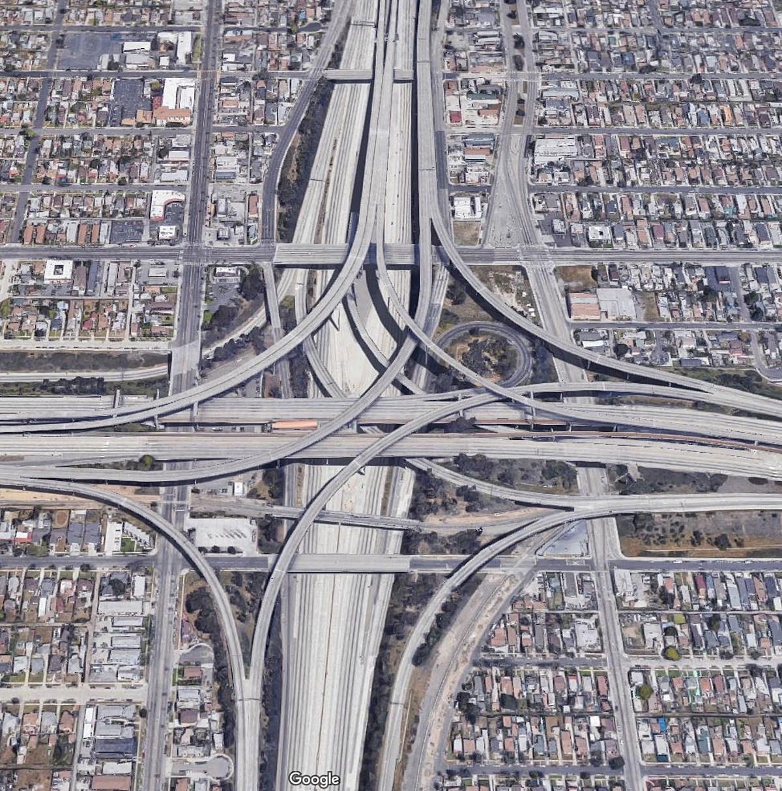

As I approach my anticipated graduation from the University of Hawaiʻi at Mānoa in 2024, I am embarking on a multifaceted journey that encompasses software engineering, car mechanics, music, and ethical considerations. This blend of interests promises a diverse and impactful path forward.
In the field of software engineering, I am honing my skills in languages such as Python, Java, and C++, utilizing them to create complex and innovative code structures. Furthermore, I am delving into web development, seamlessly integrating frontend frameworks, backend databases, and cloud technologies to develop responsive applications.
I am actively engaging in practical aspects of software development, drawing parallels to a skilled mechanic working on engines. Collaborating on open-source projects and participating in internships, I am refining teamwork, version control, and debugging skills. This hands-on experience contributes to a comprehensive skill set and enhances my problem-solving abilities.
Amidst the technical pursuits, I am also committed to ethical hacking and cybersecurity, emphasizing the importance of privacy, inclusivity, and security in digital spaces. I aim to contribute to the responsible advancement of technology and guide its trajectory with ethical principles.
Beyond the digital landscape, my affinity for car mechanics and music brings unique perspectives to my journey. The precision of car mechanics aligns with the intricacies of software design, while my experience as a professional drummer and involvement in sound engineering at Hyde Street Studios inform my approach to coding.
My journey is further exemplified through practical applications, such as scripting tasks for inventory management at Lawrence Berkeley National Laboratory. These experiences underscore my commitment to tangible results and a pragmatic approach to problem-solving.
In anticipation of my graduation, my journey intertwines software engineering, car mechanics, music, and ethical concerns. By cultivating technical skills, embracing practical experiences, emphasizing ethics, and integrating diverse passions, I am poised to contribute positively to the ever-evolving landscape of technology. My goal is to ensure that innovation aligns with ethical responsibility, ultimately shaping a future where technology serves humanity’s best interests.